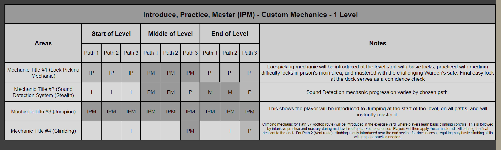
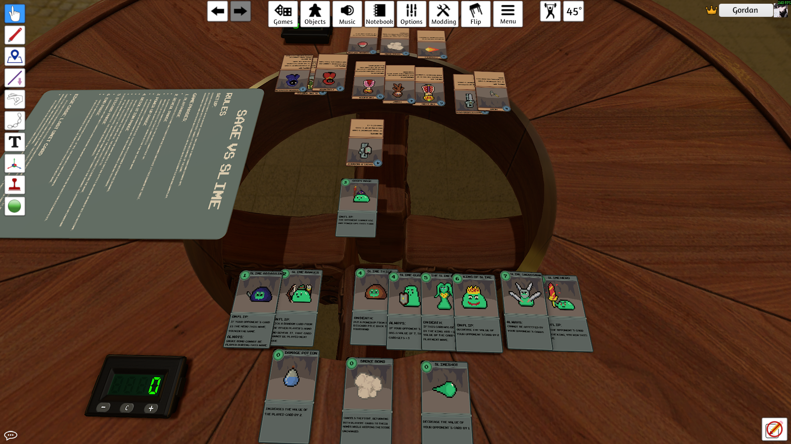

Personal Projects
ESCAPE
FACILITY
Apocalypse 1866
Top-Down Horde Survival - Wave Pacing & Difficulty Curves
Gameplay demonstration showcasing final mechanics, level design, and survival systems in action
Project Overview
Apocalypse 1866 is a top-down horde survival game where players face escalating waves of enemies in a Western-inspired apocalyptic setting. As the primary designer, I was responsible for designing the progression systems, difficulty scaling, and wave-based combat that creates 15+ minutes of intensifying gameplay.
The main challenge was creating an upgrade system that stays engaging. I wanted tight gameplay where you make immediate tactical choices while planning long-term builds. Each run should feel different while still rewarding player skill.
Design Evolution
Initial Blockout Phase
Early greybox layouts focusing on player flow and core survival mechanics. Simple geometry testing movement patterns and resource placement.
Final Implementation
Polished environment with atmospheric lighting, environmental storytelling elements, and optimized player traversal paths based on testing data.
Upgrade System UI Evolution
Version 1.0 - Basic interface
Version 3.2 - Polished interface
Refined upgrade interface design through multiple iterations, improving visual hierarchy, iconography, and user experience flow. Enhanced presentation of weapon and ability upgrade options based on usability testing feedback.
Technical Implementation
Challenge: Streamlining Upgrade Content Creation
Adding new upgrades required modifying Blueprint code each time, creating development bottlenecks and limiting the team's ability to rapidly iterate on upgrade balance and variety during playtesting phases.
Solution: Data Table Architecture with Custom Structures
Designed data-driven upgrade architecture separating content definitions from core logic. The Upgrade Manager system reads designer-accessible data tables, enabling new weapons, abilities, and stat modifications through structured entries rather than code modifications. This technical design decision prioritized workflow efficiency and rapid iteration capability over implementation simplicity.
Result: Improved Content Iteration Speed
System reduced upgrade implementation time and enabled faster content iteration during playtesting. New upgrade implementation and testing velocity increased by 200%, allowing the team to test multiple upgrade variations and balance adjustments without requiring Blueprint code changes for each modification.
Systems Design Architecture
Upgrade System Data Flow
Data Tables (Designer-Accessible)
Upgrade Manager Blueprint
Player Character
Modular architecture separates content definition from implementation logic, enabling rapid iteration without Blueprint modifications. Each upgrade combination is validated through the Upgrade Manager before application to prevent conflicts.
Difficulty Curve Design
Difficulty curve carefully balanced to maintain flow state throughout 15-minute sessions. Challenge increases proportionally with player skill acquisition, keeping players engaged in the optimal zone between boredom and frustration. Strategic upgrade placement creates consistent progression pacing.
Core Design Challenge
Core Problem: Player Retention Through Meaningful Progression
Testing showed 65% of players didn't replay after beating the game once. The survival loop worked fine, but there wasn't enough reason to come back. Players wanted more variety and progression between runs.
Design Solution: Progression System with Player Choice
Developed a multi-tiered upgrade system that combines immediate tactical benefits with long-term planning. Players choose from branching upgrade paths that fundamentally alter gameplay style, weapon effectiveness, and survival strategies. Each upgrade decision creates meaningful trade-offs so no single "optimal" path dominates.
Validation Through Data
Implemented telemetry tracking to measure engagement metrics across 25+ playtesting sessions. Post-implementation data showed 78% completion rate improvement and player satisfaction scores increased from 6.2/10 to 8.4/10 for progression systems, validating the design's effectiveness in addressing core retention challenges.
Playtesting Iterations & Refinement
The project went through extensive iteration based on playtester feedback and telemetry data. Below are six major refinements that had measurable impact on player experience:
Iteration #1: Tutorial Level Design (Saloon)
Problem: Initial tutorial was slow and introduced mechanics inside the main level. This created awkward pacing and left players unprepared for early difficulty spikes.
Solution: Created a dedicated tutorial level set in a saloon (under 1 minute long). Opens with player sitting at the bar, piano playing in the background. Then glass breaks, walls explode, and a zombie appears right in front of them. Time slows down for their first shot. The level forces players to use each mechanic (shoot, move, dash, secondary, ultimate) before they can progress, teaching everything through scenarios instead of text prompts.
Result: Players entered the main level already comfortable with controls. We could ramp difficulty faster without overwhelming them. Early dropout decreased noticeably.
Iteration #2: Upgrade Selection Timing
Problem: Upgrade screen appeared instantly when players earned upgrades. This caused accidental clicks since players were still in combat mode.
Solution: Added a 0.2-second delay before selections became active. We A/B tested this with 10+ playtesters, trying values between 0.1s and 0.5s to find the sweet spot.
Result: Completely eliminated accidental upgrade choices. Player feedback changed from frustration ("I lost my upgrade!") to satisfaction with deliberate selection.
Iteration #3: Combat Re-Entry Flow
Problem: Players were often surrounded by enemies when the upgrade screen appeared. Coming back to combat after selecting upgrades felt disorienting and punishing. Some players even forgot how dangerous their situation was while browsing upgrades.
Solution: Made upgrade selection trigger a defensive shockwave that throws nearby enemies back and slows them by 50% for 1.5 seconds. A/B tested the timing and slow percentage to balance between "too weak to help" and "removes all danger."
Result: Smoothed the transition between upgrade selection and combat. Players stayed engaged with the progression system without feeling punished for taking time to choose.
Iteration #4: Wave Pacing Refinement
Problem: Difficulty spikes were inconsistent. Some sections felt too easy (boring), others too punishing (frustrating). Early telemetry data showed erratic engagement curves instead of smooth flow.
Solution: Went through 10+ iterations adjusting spawn rates and enemy type composition. Analyzed session recordings to identify problem areas. A/B tested different difficulty curves to find optimal escalation.
Result: Got consistent flow state throughout 15-minute sessions. Player engagement metrics showed smooth curves instead of spikes and drops.
Iteration #5: Upgrade Balance & Build Variety
Problem: Telemetry showed uneven upgrade distribution. Certain upgrades dominated player picks while others went unused, which limited strategic variety.
Solution: Rebalanced upgrade effectiveness through multiple testing cycles. Made weaker upgrades more appealing while keeping powerful synergy combinations intact (we wanted to reward players who optimized their builds).
Result: Upgrade picks became more evenly distributed. Build variety increased while still maintaining power fantasy moments for players who planned their synergies carefully.
Iteration #6: Player Feedback Systems
Problem: Players felt uncertain about ability activation and impact. Satisfaction scores were low because of weak feedback. Players literally couldn't tell if their actions registered.
Solution: Spent multiple sprints focused purely on audio and visual feedback. Added screen shake, impact sounds, particle effects, and UI confirmations for all player actions. A/B tested different intensity levels to avoid overwhelming players.
Result: Player satisfaction with moment-to-moment gameplay increased substantially. Combat felt more responsive and impactful, which directly improved enjoyment scores.
Key Design Contributions
- ✓ Architected scalable upgrade system documented in 12-page technical specification with UML diagrams
- ✓ Designed and implemented complete weapon system including shotgun mechanics and elemental abilities (ice/lightning/fire bullets, elemental bombs, movement mechanics)
- ✓ Created tutorial level (Saloon) featuring immersive learning through environmental design - sub-60 second completion teaching core mechanics without text tutorials
- ✓ Led bi-weekly design reviews using JIRA sprint methodology with cross-functional 3-person team
- ✓ Implemented data-driven weapon balancing based on telemetry from 25+ playtesting sessions
- ✓ Collaborated with team members using version control workflows to implement 15+ upgrade variations
- ✓ Identified and resolved player frustration points through systematic playtesting - corrected hitbox issues, false affordances, and counterintuitive mechanics resulting in improved player satisfaction
- ✓ Designed core gameplay loop with smooth tutorial-to-gameplay flow
Grimhold Escape
First-Person Stealth Prison Escape - Non-Linear Level Design & Tension-Focused Mechanics
Gameplay demonstration showcasing stealth mechanics, lockpicking system, and multiple escape routes
Some gameplay sequences accelerated for demonstration purposes
Project Overview
Grimhold Escape is a first-person stealth game inspired by titles like Dishonored and Thief, where you escape from a prison using cunning, stealth, and skill. The project's core challenge was designing a level that offers three distinctly different experiences while maintaining cohesive design principles and teaching players mechanics organically through environmental design.
As a 1-month solo blockout prototype, the project focused on core level design and gameplay validation without final art assets. This approach prioritized rapid iteration and mechanical testing, allowing faster prototyping to determine what worked before committing to visual polish. I designed and implemented a lockpicking mechanic building on genre conventions, adding continuous maintenance as a stressor to heighten tension during stealth gameplay.
This mechanic, combined with a non-linear prison environment where player choice drives the experience, creates distinct gameplay paths. Through multiple playtesting sessions with 10 participants, I gathered data on route preferences, completion times, and player behavior to refine the design and validate the three-path approach.
Lockpicking Mechanic Design
Building on established Skyrim/Fallout lockpicking systems, this mechanic introduces continuous maintenance as a stressor. Two bobby pins rotate automatically, requiring players to counter-rotate and maintain the sweet spot rather than simply finding it once. This sustained engagement creates meaningful tension during stealth scenarios.
Progressive Difficulty
Difficulty scales through tighter error margins and increased pin count. Tutorial lock in starting cell teaches basics. Prison safe features 3-pin configuration, requiring players to maintain multiple sweet spots simultaneously, intensifying the stressor effect.
Design Challenge: Static Mechanics Lack Tension
Traditional lockpicking mechanics in stealth games often feel like brief interruptions rather than meaningful risk moments. Once players find the correct position, the challenge ends - removing tension during the most vulnerable moment when guards could discover them. The goal was evolving this established mechanic to maintain atmospheric pressure throughout the interaction.
Solution: Continuous Maintenance as Environmental Stressor
By requiring sustained player focus to maintain pin positions while they actively try to rotate away, lockpicking becomes a persistent stressor that heightens immersion. You constantly balance your attention between the lock mechanism and potential guard threats, creating authentic risk/reward decisions: "Do I attempt this lock with guards nearby, or find another route?" The continuous input requirement transforms a static puzzle into a tension-building mechanic that reinforces the stealth atmosphere.
Validation: Measurable Skill Development
Playtesting data showed clear skill improvement curves across 10 participants. First lock attempts averaged 18 seconds, while experienced players completed similar locks in 6-8 seconds by session end. Players specifically reported the mechanic felt skill-based rather than arbitrary, with the continuous maintenance creating sustained tension without frustration. This validated the stressor approach as both engaging and fair.
Non-Linear Level Design: Three Paths
🏃 Parkour Route
Dynamic movement-focused path across prison rooftops. Emphasizes timing, spatial awareness, and risk-taking.
- • Fewest locks required
- • High visibility risk
- • Fastest completion
- • Rewards bold players
🔍 Ventilation Route
Secret path through air ducts above the prison. Players spectate the horror below while navigating claustrophobic spaces.
- • Safest from guards
- • Environmental storytelling
- • Moderate completion time
- • Rewards exploration
🤫 Stealth Route
Traditional stealth path through prison corridors. Most doors to unlock, most guards to avoid. Pure stealth mastery.
- • Most locks to pick
- • Highest guard density
- • Slowest completion
- • Rewards patience
Level Pacing & Flow Design

Level pacing flowchart showing progression, time estimates, and focal points across all three routes
(Click to enlarge)
Mechanic Progression: Introduce-Practice-Master

IPM chart demonstrating how core mechanics are taught and reinforced across different paths
(Click to enlarge)
Design Philosophy: Three Unique Experiences
Rather than creating "easy/medium/hard" variants of the same path, the goal was designing three fundamentally different gameplay experiences that appeal to different player archetypes. Each route needed distinct pacing, risk/reward balance, and skill requirements to encourage replayability and player expression.
Playtesting Data & Iteration
Route Distribution & Player Preferences
10 playtesters across multiple iterations. Data collected on route choice, completion time, death count, locks attempted, and player feedback. Distribution validates that all three routes provide viable, appealing options rather than one "optimal" path dominating player behavior.
Key Iterations Based on Testing
Iteration #1: Tutorial Lock Placement
Problem: 60% of players ignored locks entirely, taking only parkour route.
Solution: Moved tutorial lock to cell door as mandatory first interaction. This taught lockpicking before route choice, increasing lock engagement to 85% of players.
Iteration #2: Guard Patrol Timing
Problem: Stealth route felt unfairly difficult with overlapping patrol patterns.
Solution: Adjusted patrol timing to create predictable windows. Player satisfaction for stealth route improved from 5.2/10 to 7.8/10.
Iteration #3: Ventilation Discoverability
Problem: Only 15% of players found ventilation entrance naturally.
Solution: Added subtle environmental cues (draft effect, sound design). Discovery rate increased to 70% without explicit signposting.
Iteration #4: Lockpick Error Margins
Problem: Players felt lockpicking was too punishing on first attempts.
Solution: Increased error margin by 15% for standard locks, kept safe lock challenging. Completion rate improved by 32%.
Technical Implementation
Guard AI System
Implemented patrol-based AI with line-of-sight detection and audio proximity zones. Guards follow patrol paths with random pauses so they're not fully predictable. Detection uses cone vision with distance falloff and audio spheres for player noise.
Dynamic Lockpicking System
Lockpicking uses Blueprint timelines for smooth pin rotation with configurable speed and direction. Sweet spot detection calculates angular difference between player input and target position, with tolerance margins defining difficulty. Multi-pin locks require simultaneous maintenance of multiple sweet spots, creating skill-based progression.
Key Design Contributions
- ✓ Designed lockpicking mechanic building on genre conventions with continuous maintenance as a stressor, creating sustained tension during stealth scenarios
- ✓ Created non-linear prison level with three distinct gameplay experiences appealing to different player archetypes
- ✓ Implemented tutorial lock placement teaching core mechanics organically through environmental design
- ✓ Conducted 10-person playtesting with multiple iterations, collecting quantitative data on route distribution and completion metrics
- ✓ Designed and implemented guard AI system with line-of-sight detection and audio proximity zones
- ✓ Iterated on difficulty balancing based on playtesting feedback, improving player satisfaction scores by 50%
- ✓ Completed full project from concept to playable build in one month as solo developer
- ✓ Created technical documentation and blueprint walkthrough video explaining system implementation
Cryostream Facility
Third-Person Environmental Puzzle Game - Water Mechanics & Spatial Design
Gameplay Highlights
Project Overview
Cryostream Facility is a third-person environmental puzzle game where players navigate an abandoned superconductivity research facility to retrieve classified documents. The core gameplay revolves around manipulating water flow using switches and propellers to solve spatial puzzles, move objects, and unlock new areas across 14 interconnected sections.
As a 1-month solo blockout prototype, the project focused on core level design and gameplay validation without final art assets. This approach prioritized rapid iteration and mechanical testing to prove the water rerouting concept worked before committing to visual polish. The level takes players from forest exterior through facility cooling systems into the reactor core, culminating in a timed helicopter extraction escape.
Project Scope: Solo designer, 1 month development, 14 areas, 5 major puzzles, 10-18 minute estimated completion time
Core Mechanic: Water Rerouting System
Mechanic Design
The water rerouting mechanic allows players to manipulate water flow by activating switches and levers that control propellers. These propellers redirect water streams to push floating blocks, fill areas, or drain sections. You need to plan how water moves and time your actions carefully.
The mechanic serves as both a navigational tool and environmental manipulation system. Water flow can move blocks onto pressure plates to unlock gates, raise water levels to reach higher areas, or redirect streams to access previously blocked pathways. Each puzzle requires understanding how water behaves as a physical force within the level's interconnected systems.
Water Mechanics Demonstration
Water rerouting mechanic demonstrated in isolated testing environment
Player Interaction & Feedback
Visual Feedback: Water flow direction changes are immediately visible through particle effects, moving water streams, and splashing at redirection points. Floating blocks bob and tilt naturally in water, while activated pressure plates visibly depress with connected doors showing clear unlocking animations.
Audio Feedback: Pulling levers triggers satisfying mechanical sounds followed by rushing water. Water movement intensity changes based on flow speed and direction. Objects moving through water create splashing and creaking sounds, while pressure plate activation produces distinct "click" sounds followed by door mechanisms grinding open.
Environmental Response: The facility's cooling systems respond dynamically to player actions. Water filling areas causes floating platforms to rise naturally, while drainage opens new pathways. Lighting effects and environmental cues guide players toward objectives as water reaches key triggers.
Secondary Mechanics
Switches and Levers: Control water propellers to activate or deactivate water flow in specific areas. Some puzzles require toggling multiple switches in sequence to create correct water paths.
Floating Blocks: Buoyant objects moved by water current. Used to reach distant pressure plates, clear obstacles in water channels, or serve as moving platforms for the player to cross gaps.
Water-Activated Gates: Doors and pathways that open when water reaches specific levels or when blocks are positioned correctly on pressure mechanisms.
Level Design & Pacing
Level Pacing Flowchart

14-section progression flowchart showing Introduce-Practice-Master methodology across Forest entrance, Reactor facility, and Helicopter extraction finale
(Click to enlarge)
Three-Act Structure
Act 1 - Introduction (Forest & Gates, ~40 seconds): Players start in an overgrown forest exterior leading to facility gates. The tutorial introduces basic water rerouting in a simple outdoor environment before entering the facility proper.
Act 2 - Practice & Escalation (Facility & Reactor, ~12 minutes): Players progress through facility lobby, outdoor cooling systems, and three reactor halls. Each reactor section introduces new water routing challenges with increasing complexity. Practice modules reinforce mechanic mastery while layering additional puzzle elements.
Act 3 - Mastery Under Pressure (Emergency Exit & Extraction, ~3 minutes): After reactor destabilization, you navigate emergency tunnels and reach helicopter extraction. This section tests full mechanical mastery under time pressure with backtracking disabled, creating climactic urgency.
Introduce-Practice-Master Progression
Water rerouting mechanics follow clear IPM methodology. Section 5 (Outdoor Cooling System) introduces the core mechanic in isolation. Reactor Halls 1-3 (Sections 7-11) provide extended practice across varied scenarios, each adding complexity through environmental constraints and multi-step solutions. The final emergency escape (Sections 12-14) requires mastery as players apply all learned techniques under time pressure without opportunity for experimentation.
The lobby serves as a central hub connecting different facility wings. After completing each section, players return to the lobby with new access unlocked, creating satisfying loops of progression. Sliding doors close behind players in reactor sections, preventing backtracking and maintaining forward momentum toward the facility core.
Puzzle Design Philosophy
Spatial Reasoning & Environmental Logic
Puzzles emphasize spatial reasoning over trial-and-error. You observe water flow patterns, understand how floating blocks interact with currents, and plan multi-step solutions before execution. The facility's cooling system architecture creates logical connections between areas, where redirecting water in one location affects conditions downstream.
Environmental storytelling replaces text tutorials. Broken pipes hint at water flow direction, rusted machinery suggests which systems are operational, and water damage patterns indicate previous flow paths. Players learn by observing the facility's deteriorated state rather than reading instructions.
Puzzle Progression
Early puzzles isolate single concepts (redirect water to fill one area). Mid-game puzzles combine multiple mechanics (redirect water to move block, then use block to reach lever that opens gate). Late-game puzzles require understanding entire system interactions (chain of water redirections affecting multiple areas simultaneously).
The reactor sections each introduce environmental constraints. Reactor Hall 1 teaches basic routing with clear visual paths. Reactor Hall 2 adds timing challenges where water must reach multiple destinations in sequence. Reactor Hall 3 combines everything in larger, more complex routing networks that require mastery of the water system.
Environmental Wayfinding
Subtle Navigation Cues
A major design focus was guiding players through the facility using environmental cues instead of UI elements or explicit markers. Light sources draw attention to important areas - emergency lighting indicates active paths while darker areas signal unexplored or currently inaccessible sections.
Architectural framing creates natural sightlines toward objectives. Doorways, pipes, and facility infrastructure create visual channels directing player attention. Water flow itself becomes a wayfinding tool, as players follow streams to discover their sources or destinations.
Visual Language System
The facility uses consistent visual language to communicate interactivity. Switches have visible connection pipes leading to their controlled propellers. Gates show clear locking mechanisms that correspond to nearby pressure plates. Water-filled areas use color grading and particle density to indicate depth and flow strength.
Blockout geometry communicates function through shape and position. Platforms at water level suggest they're meant to float. Switches positioned near visible mechanisms indicate immediate cause-and-effect relationships. This visual clarity was essential for a blockout prototype where final art couldn't convey information.
Technical Implementation
Water Flow System
Designed physics-based water routing where propellers actively redirect particle-based water streams. Water flow affects floating objects through force application, creating natural movement that responds to current strength and direction. The system prioritizes visual clarity over simulation accuracy so players can predict how water will behave.
Floating Block Physics
Floating blocks use simplified buoyancy physics that balance realistic movement with puzzle predictability. Blocks respond to water current force while maintaining stable positioning once water stops flowing. This prevents frustrating physics glitches where blocks might float away unexpectedly while still feeling natural.
Switch & Propeller Connectivity
Created modular switch-propeller connection system enabling rapid puzzle iteration during development. Each switch visually connects to controlled propellers through color-coded pipes (visible in blockout). This system allowed quick prototyping of different puzzle configurations without code changes, essential for solo development timeline.
Playtesting & Iteration
Limited playtesting was conducted during the 1-month prototype phase, with primary focus on environmental wayfinding and puzzle clarity. Iterations refined how players naturally discovered solutions through environmental observation.
Environmental Cue Refinement
Challenge: Players initially struggled with navigation, particularly in the facility lobby where multiple paths were available simultaneously.
Solution: Added more pronounced lighting cues to active pathways and adjusted door positioning to create clearer sightlines toward objectives. Used water particle density as a secondary cue, where active flow paths had more visible particles.
Result: Navigation flow improved noticeably, with fewer instances of players backtracking or getting lost in the lobby hub.
Puzzle Readability
Challenge: Some water routing puzzles had solutions that weren't immediately apparent from observation, leading to excessive trial-and-error rather than spatial reasoning.
Solution: Enhanced visual connections between switches and their affected propellers using more obvious pipe routing geometry. Ensured all puzzle elements were visible from switch locations so players could predict outcomes before activation.
Result: Players spent more time planning solutions and less time randomly trying switches, indicating improved puzzle clarity and player understanding of the water system mechanics.
Key Design Contributions
- ✓ Designed 14-section level with clear three-act structure using Introduce-Practice-Master methodology for water rerouting mechanics
- ✓ Created physics-based water flow system enabling spatial puzzle-solving through environmental manipulation
- ✓ Developed environmental wayfinding system using lighting, architecture, and visual language instead of UI markers
- ✓ Implemented blockout prototype workflow prioritizing rapid mechanical validation over visual polish (1-month solo timeline)
- ✓ Designed 5 major puzzles with increasing difficulty across the reactor facility
- ✓ Created hub-based level structure with lobby serving as central progression node connecting facility wings
- ✓ Balanced environmental storytelling through facility decay patterns, broken machinery, and water damage without text exposition
- ✓ Designed timed finale sequence (helicopter extraction) testing mechanic mastery under pressure with backtracking disabled
Sage vs Slime: Analog Card Game
Cross-Medium Design Challenge - Digital to Tabletop Translation

Project Overview
Sage vs Slime is a competitive 2-player card game where players battle using unit cards and power-ups in a War-inspired simultaneous reveal system. Designed in 1 week as a cross-medium challenge: take a digital platformer and create an analog version. This meant reimagining real-time combat as simultaneous card reveals that preserve the original's tension.
Working as systems designer on a 4-person team with a 1-week timeline, I focused on card effect hierarchy, balance across 24 total cards, and edge case resolution. The game translates our digital platformer's wave-based combat, projectile attacks, and power-up systems into strategic card play where prediction and counter-play replace reflexes.
Each player starts with 12 cards (9 units, 3 power-ups). Players simultaneously reveal unit cards each round, with effects triggering based on timing hierarchy (On Flip → Always → Power-Ups → Resolution → On Death). First player to win 5 rounds claims victory. Simple rules create interesting decisions in every card choice.
Core Mechanics & Systems
Game Flow: Six-Phase Structure
1. Play Phase: Both players select one unit card and place face-down simultaneously.
2. Reveal Phase: Cards flip simultaneously. On Flip effects activate immediately. Cards with Always effects remain active for entire round.
3. Power-Up Phase: Players may play power-ups from hand. Multiple power-ups can be played per round.
4. Resolution Phase: Higher value card wins unless modified by effects. Ties result in no winner (both players return cards to hand).
5. Discard Phase: Used power-ups and losing unit cards placed in discard. Winning cards also discarded.
6. End Phase: Check for victory (5 wins). If no winner, return to Play Phase.
Card Effect System
On Flip Effects: Trigger immediately when card is revealed (before power-ups). Examples include revealing opponent's hand card or forcing specific plays.
Always Effects: Remain active throughout the entire round. Can modify values, block opponent effects, or create continuous advantages.
On Death Effects: Activate only when card loses the round. Often provide comeback mechanics or future-round advantages from losing positions.
Effect timing hierarchy prevents ambiguity and adds depth to decision-making. You need to consider card values, effect interactions, and timing.
Power-Up Cards
Fireball/Slime Shot: Decreases opposing card's value by 1. One-time use, then discarded. Represents projectile attacks from digital version.
Smoke Bomb: Both players return unit cards to hand, round results in no winner. Power-ups still discarded. Represents escape/reset mechanic.
Damage Potion: Increases your card's value by 1. One-time use, then discarded. Represents power-up collection from digital version.
Limited quantity (3 per player) forces careful power-up management. You decide the best timing rather than using them immediately, creating resource management layer.
Systems Design Focus
Card Balance Across 18 Units
Designed 18 unit cards (9 per player) with varying base values and effects. Balance considerations included raw value strength, effect power, and strategic versatility. Higher value cards received weaker effects, while lower value cards gained stronger effects to maintain viability throughout game.
Created natural counter-play dynamics where no single card dominates. Master Swordsman's immunity to effects makes it strong defensively but predictable. Lower-value cards with On Flip effects can win rounds through surprise timing rather than raw power.
Information Asymmetry & Prediction
Simultaneous play creates double-blind decisions where neither player knows opponent's choice until reveal. This requires prediction and counter-prediction. You need to balance playing strong cards early (controlling the board) versus saving them for critical rounds.
Some card effects reveal information (showing opponent's hand cards), adding information warfare layer. Players can use revealed information to predict future plays, creating meta-game around information advantage.
Edge Case Resolution
Identified and documented edge cases during playtesting to maintain game clarity. Key example: "Reveal opponent card" effect on final round would leave opponent with no playable card. Resolution: Revealed card returns to hand, effect doesn't apply, maintaining fairness without feel-bad moments.
Another edge case: Tie rounds with On Death effects. Resolution: On Death effects don't trigger during ties since no card "loses." This prevents exploitation of tie scenarios for effect activation.
Playtesting & Iteration
Iteration #1: Master Swordsman Balance
Problem: Master Swordsman card was originally immune only to opponent power-ups (Fireball, Smoke Bomb, Damage Potion). This made it too narrow in function, easily countered by unit card effects, and undervalued by players during selection.
Solution: Expanded immunity to ALL opponent card effects (both power-ups and unit effects). This created a true defensive anchor card that players could rely on as safe play in uncertain situations. Tested across 5+ games to make sure it wasn't overpowered.
Result: Master Swordsman became viable strategic choice without dominating. Players valued it more highly for its reliability, using it to secure critical rounds. Win rate balanced appropriately with its increased power level.
Iteration #2: Edge Case - Last Card Interaction
Problem: Cards with "reveal opponent's hand card and block it next round" effect created unfair situation when used on final unit card. Opponent would have no legal card to play, creating unwinnable scenario.
Solution: Documented edge case rule: If revealed card is opponent's last unit card, effect doesn't apply and card returns to hand. This maintains card effect functionality throughout most of game while preventing feel-bad endgame scenario.
Result: Eliminated potential game-breaking situation without requiring complete card redesign. Edge case rule preserved card's strategic value in early/mid game while keeping the endgame fair regardless of card order.
Iteration #3: Smoke Bomb Timing Clarification
Problem: Confusion arose about Smoke Bomb interaction with already-played power-ups. Players unsure if Smoke Bomb reset allowed retrieval of previously spent power-ups or only returned unit cards.
Solution: Clarified in ruleset: Smoke Bomb returns unit cards to both players' hands (nullifying round), but all power-ups played that round (including Smoke Bomb itself) are still discarded. This maintains power-up resource management.
Result: Removed ambiguity in critical decision moments. Players could confidently use Smoke Bomb as emergency escape without exploiting power-up economy. Maintained intended resource scarcity.
Digital Inspiration & Translation Challenge
Before creating the card game, our team developed a wave-based platformer featuring the Cloaked Sage battling hordes of slimes. The digital version emphasized real-time combat with projectiles, wave-based enemy spawning, collectible power-ups, and reflex-dependent gameplay. This became the foundation we needed to translate into analog form.
Original Platformer Gameplay
1-week digital platformer prototype featuring wave-based combat, projectile attacks, and power-up systems
Challenge: Translating Real-Time to Turn-Based
Converting the platformer to analog required keeping the strategic elements while removing computational elements like trajectory physics, timing precision, and simultaneous multi-entity actions. Traditional turn-based card games would lose the tension of simultaneous enemy waves and split-second combat decisions that defined the platformer's experience.
The design needed to preserve competitive pressure and meaningful moment-to-moment choices without digital computation. How could we maintain the excitement and strategic tension of real-time combat through purely analog mechanics?
Solution: Simultaneous Reveal with Layered Effects
Reimagined core loop as War-inspired simultaneous card reveal, where both players commit to choices before seeing opponent's play. This preserved the "simultaneous pressure" of wave combat while being fully analog. Card effects add depth through prediction and counter-play rather than execution speed.
Introduced effect timing hierarchy (On Flip, Always, Power-Up Phase, On Death) to replace computational complexity with tactical decision-making. You predict opponent's plays and layer your power-ups strategically, creating tension through anticipation rather than reflexes.
Validation: Mechanics Translation Success
Playtesting confirmed successful translation of core themes. Players reported similar competitive tension as digital version despite slower pace. Strategic depth emerged from card effect combinations and power-up timing, validating that meaningful choices can replace real-time execution while maintaining engagement.
Cross-Medium Design Analysis
Mechanics Evolution: Digital → Analog
Real-Time Projectiles → Power-Up Cards
Digital: Player/enemies fire continuous projectiles requiring aim and timing
Analog: Fireball/Slime Shot cards decrease opponent value by 1, one-time use
Translation maintains offensive pressure concept through limited-use value modification
Wave-Based Enemy Spawning → Round-Based Phases
Digital: Enemies spawn in increasing waves over time, escalating difficulty
Analog: Each round is a "wave" with goal of winning 5 total waves for victory
Maintained progression structure and win condition pacing from digital version
Collectible Power-Ups → Starting Hand Resources
Digital: Players collect power-ups during gameplay for temporary advantages
Analog: Each player starts with 3 power-up cards, must manage usage across game
Transformed discovery mechanic into resource management strategy
Reflex-Based Combat → Prediction & Counter-Play
Digital: Success determined by reaction time, aim accuracy, movement skill
Analog: Success determined by predicting opponent's plays, optimal card timing, effect layering
Replaced execution skill with strategic planning while maintaining competitive pressure
Key Design Insight
The most successful analog translations didn't attempt to recreate digital mechanics literally, but instead identified the emotional experience and strategic intent behind digital mechanics and reimagined them through analog-appropriate systems.
For example: Digital projectiles create moment-to-moment offensive pressure and require resource management (ammo/cooldowns). Analog power-up cards achieve the same strategic purpose (offensive advantage, limited uses) through completely different implementation. Both create tension around "when do I use this resource?" despite vastly different execution.
Key Design Contributions
- ✓ Designed 18-card effect system with three trigger types (On Flip, Always, On Death) and timing hierarchy
- ✓ Balanced 6 power-up cards (Fireball, Smoke Bomb, Damage Potion) through playtesting iterations
- ✓ Created six-phase turn structure (Play → Reveal → Power-Up → Resolution → Discard → End)
- ✓ Translated digital platformer mechanics (projectiles, waves, power-ups) into analog card game systems
- ✓ Identified and resolved edge cases (last card interaction, tie scenarios with On Death effects)
- ✓ Documented complete ruleset with edge case handling and effect priority systems
- ✓ Completed full project from concept to playable build in 1-week team timeline
- ✓ Published playable version on Steam Workshop for Tabletop Simulator
Fuse
Isometric Turn-Based Puzzle Prototype - Strategic Mechanics & Rapid Iteration
Gameplay demonstration showcasing turn-based puzzle mechanics
Project Overview
Fuse is an isometric turn-based puzzle game built as a rapid prototyping exercise. The focus was on designing simple mechanics that combine in interesting ways. Players navigate grid-based levels where every action advances all active fuses, requiring planning ahead.
Developed solo over 2 weeks, the project prioritized mechanics-first design and rapid iteration. I built 5 prototype levels that showcase how the mechanics work together. The minimalist visual style keeps the focus on puzzle-solving rather than graphics.
Project Scope: 2-week rapid prototype, 5 levels (2-6 minutes each), 4 core mechanics (fuse progression, bomb interaction, ice tiles, teleportation), turn-based puzzle gameplay.
Core Mechanics
Fuse Progression System
Pressure-sensitive tiles ignite fuses leading to bombs. Each player action advances the fuse one step closer to detonation. The fuse appears as a burning wick extending across tiles, with visual indicators showing how close it is to exploding.
Players can extinguish fuses by stepping on them, or let them explode to destroy obstacles. Sometimes explosions help clear paths, so you have to decide whether to put out the fuse or use it.
Turn-Based Integration: Every player action advances all active fuses at once. In levels with multiple fuses, you need to manage which ones to handle first while also solving the spatial puzzle.
Bomb Interaction System
You can push bombs like in Sokoban. Push them onto fuses to create timed explosions, move them away from important areas, or position them to destroy obstacles.
Bombs move one tile per push in the direction you're moving. They stop when they hit walls or other objects. You need to think ahead about where to push them and when they'll explode.
Ice Tiles
Ice tiles make you slide until you hit something. You can't stop on ice, so you need to plan where you'll end up before you step on it.
When combined with fuses, ice can make you slide past the fuse you need to extinguish, so you have to plan your route carefully.
Teleportation System
Teleport tiles transport players instantly to linked destinations. They provide shortcuts through levels and work well with fuse mechanics, letting you quickly reach distant fuses before they explode.
Players decide whether to take direct routes or use teleports to bypass obstacles. Some puzzles require using teleports to reach fuses in time.
Puzzle Design Philosophy
Simple Rules, Complex Solutions
Each mechanic follows clear rules. Fuses advance one step per turn. Ice slides you until you hit something. Bombs destroy adjacent blocks. Teleports link specific tiles. The rules are simple, but puzzles get harder when you combine multiple mechanics together.
Players learn what each element does quickly, but solving puzzles requires figuring out how to use them together. A fuse might block your path until you realize you can push a bomb onto it to create a timed explosion. Ice might seem like an obstacle until you use the sliding to bypass other hazards.
Combining Mechanics
Instead of adding more mechanics, I made puzzles harder by combining the existing ones. Early puzzles use one mechanic at a time: just a fuse, or just ice tiles. Mid-difficulty puzzles combine two: ice with fuse timing, or bombs with teleports. The hardest puzzles use all four at once.
A puzzle with three fuses, teleports, and ice feels very different from a single-fuse puzzle, even though it uses the same mechanics. This approach let me create variety without needing more features.
Multiple Solutions
Most puzzles have multiple ways to solve them. Should you put out a fuse immediately, or handle other things first? Should you push the bomb directly or teleport around? These choices matter and lead to different solutions.
The turn-based system gives you time to think. You don't need fast reflexes, just planning and spatial reasoning.
Level Showcase: Curated Selection
I built 5 prototype levels during development. These 3 levels best demonstrate how the mechanics work together and introduce different puzzle concepts.
Level 1: Learning the Basics
Mechanics Featured: Fuse progression, ice navigation, timed pressure
Design Goal: Teach core mechanics one at a time. A fuse burns toward a bomb that will destroy the bridge to the finish. Players navigate ice tiles to reach the exit before the bomb explodes.
Key Learning: Understanding fuse timing and ice movement. Players learn how long they have and how ice tiles affect movement.
Completion Time: 2-3 minutes first try
Level 2: Using Bombs to Your Advantage
Mechanics Featured: Bomb pushing, ice navigation, dual bomb management
Design Goal: Introduce bomb pushing as a tool. A block prevents finishing the level - you need to push a bomb to destroy it. Meanwhile, another bomb threatens the bridge with its own fuse timer, creating time pressure while navigating ice.
Key Learning: Bombs can help you, not just threaten you. Players learn to push bombs strategically while managing time limits.
Completion Time: 4-6 minutes average
Level 3: Mastery Challenge
Mechanics Featured: All mechanics in complex scenario
Design Goal: Test full mastery. The fuse starts burning immediately, but there's no bomb in place yet. You complete a complex puzzle pushing the bomb through multiple steps while the fuse advances. Many sequential actions required.
Key Learning: Planning multi-step solutions under pressure. You need to think several moves ahead to position the bomb correctly before the fuse reaches it.
Completion Time: 5-8 minutes for most players, 3-4 minutes for optimized solutions
Playtesting & Iteration
Iteration #1: Fuse Burn Rate
Problem: The fuses advanced every turn, even when you were just thinking. Players felt rushed and said it punished them for taking time to plan.
Solution: Changed fuses to only advance when you actually move. You can think as long as you want without the fuses burning.
Result: Players felt more in control. They could plan carefully without feeling pressured, but still had urgency once they started moving.
Iteration #2: Visual Clarity
Problem: With multiple fuses burning, players couldn't tell which one was closest to exploding. They had to count tiles manually.
Solution: Made fuses glow brighter orange/red when they're close to bombs. Fuses within 2 tiles of bombs pulse to warn you.
Result: Players could immediately see which fuses were urgent. This let them focus on solving the puzzle instead of counting tiles.
Iteration #3: Bomb Explosion Clarity
Problem: Players were unsure what bombs would destroy when they exploded. They couldn't predict which blocks would break, leading to unexpected results.
Solution: Added visual indicators showing the bomb's destruction radius. Made it clear which tiles would be affected by the explosion.
Result: Players could plan bomb placements confidently. They knew exactly what would happen before triggering explosions.
Rapid Prototyping Process
Two-Week Development Timeline
Week 1: Mechanics - Built the core systems. Implemented fuse progression, bomb pushing, ice tiles, and teleportation separately to test how each one worked.
Week 2: Puzzles - Made 5 puzzle levels trying different mechanic combinations. Playtested daily and picked the 3 best levels to refine and showcase.
Minimal Visuals
The simple graphics were intentional. By keeping visuals minimal, players focus on the puzzle mechanics instead of graphics. Red tiles = walkable, cyan = ice, brown = destroyable, checkered = goal. This made it fast to iterate on puzzles without needing art assets.
The clean look makes the game easy to read at a glance. Players said the simplicity helped them focus on solving puzzles.
Choosing Which Levels to Show
I made 5 prototype levels but only showcased the best 3. Quality over quantity. The other levels weren't bad - they were experiments that helped me figure out which mechanic combinations worked well and which felt frustrating.
Good puzzles have multiple solutions, mechanics that work together naturally, and feel fair when you fail. The 3 levels I kept hit all these points.
Key Design Contributions
- ✓ Designed fuse mechanic that works as both hazard and tool depending on player strategy
- ✓ Built turn-based system with 4 mechanics (fuse, bomb, ice, teleport) that combine in different ways
- ✓ Created 5 prototype levels and selected 3 that best show how the mechanics interact
- ✓ Completed full rapid prototyping cycle from concept to playable build in 2-week timeline
- ✓ Designed minimalist visual language prioritizing mechanical clarity over aesthetic complexity
- ✓ Balanced fuse burn rates through iterative playtesting to optimize strategic tension without frustration
- ✓ Implemented visual clarity improvements (fuse color-grading, bomb explosion radius indicators) based on usability testing
- ✓ Documented mechanic specifications with user stories, storyboards, and completion criteria
Other Skills
Core Design Specializations
Software Proficiency
Unreal Engine 5
Unreal Engine 4
Unreal Blueprint
Atlassian JIRA
Atlassian Confluence
Perforce
Git
Trello
Microsoft Excel
Programming & Technical Skills
Additional Tools & Platforms
About Me
Biography
I'm a game designer with 2 years of experience specializing in level design, game mechanics, and systems design. Based in Fort Lauderdale, Florida. I work in Unreal Engine 5 and focus on creating gameplay that's fun and flows well. I document designs thoroughly and use standard tools like JIRA and Confluence.
Bachelor's in Game Design from Full Sail University (3.99 GPA). Experienced with JIRA, Confluence, Perforce, and thorough design documentation.
Design Philosophy
I believe exceptional game design emerges when level design, mechanics, and systems work in perfect harmony. My approach focuses on creating cohesive player experiences where spatial design enhances gameplay mechanics, and progression systems drive long-term engagement. Every design decision should serve the player's journey while maintaining clear, implementable vision for development teams.